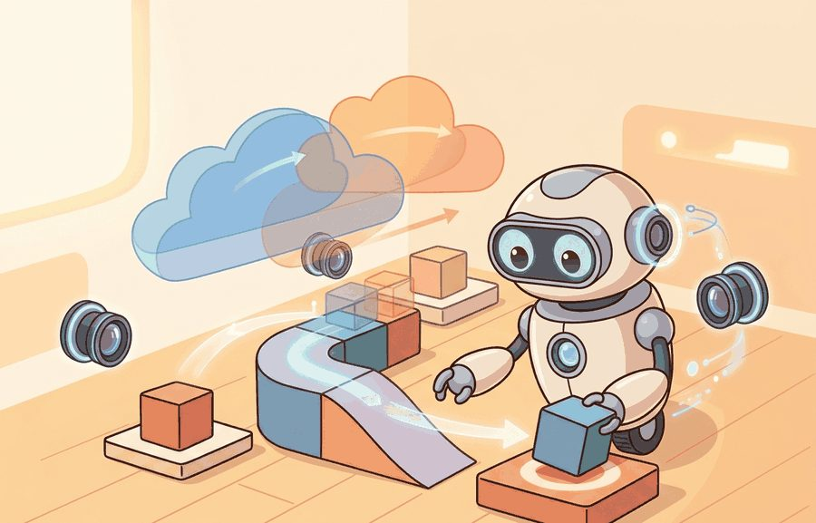
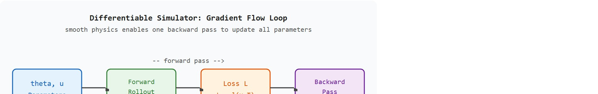
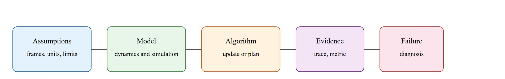

"Once the simulator can tell you how a parameter change ripples into future states, you stop guessing and start steering."
A Gradient-Aware Trajectory Optimizer

This section builds directly on the symplectic integrators developed in section 6.4 and the contact-geometry model introduced in section 6.3; familiarity with both will make the gradient derivations here immediate. The differentiable-physics ideas are extended in section 11.2 (MuJoCo/MJX) and section 11.4 (Isaac Lab), where autodiff is embedded in production simulators and the same finite-difference validation discipline applies at scale.
A robot hand fumbles a screw three times, then suddenly tightens it perfectly. What changed? Not the hand, not the code structure: just the simulator's ability to hand back a gradient. When physics is differentiable, every failed grasp tells the policy exactly which finger force, which approach angle, which timing to shift. Modern embodied AI has reached the point where gradient-based co-optimization of policy, morphology, and world model is practical inside a single training loop, but only if the simulator can propagate derivatives through contact. Here you will derive that backward pass, validate it against finite differences, and understand precisely where the smoothness assumptions break so you know when to trust the gradient and when to stop.
Ask an ordinary simulator "your robot just missed the target by four centimeters" and it shrugs; ask a differentiable physics simulator the same thing and it hands you a precise answer: nudge this motor torque up, that approach angle down, and the miss shrinks. The difference is a single returned object. That object is the derivative of any output quantity, such as a task loss, with respect to its inputs: forces, control signals, masses, or shape parameters. It makes the simulator behave like a differentiable function you can optimize through. Figure 6.5A traces this idea: gradients flow backward through the simulator from a task loss to the policy parameters, marking which physics quantities are differentiable and which are not. The rest of this section builds the technical contract for differentiable physics into a usable mental model. First it defines the object of study, then connects it to the agent loop, then tests it with a compact implementation.
The key question in Differentiable physics: what it buys you is practical: what must the agent know, what can it observe, what action is available, and what evidence shows that the action worked under the stated conditions?
A differentiable simulator earns its place only when its gradient changes a physical command you can execute. For a Franka Panda reaching task in MuJoCo, the test is concrete: does the gradient of landing error with respect to motor torque let you cut the number of real-arm rollouts from thousands of black-box samples to a few hundred gradient steps, the way DiffTaichi cut soft-robot stiffness tuning from roughly 50,000 rollouts to 200? If the gradient does not survive the finite-difference check at the first contact event (a fingertip touching the object), it changes no safe command and has earned nothing.
Before differentiable simulators existed, engineers had three options for tuning physical parameters or trajectories: hand-derive the gradients (laborious and error-prone for contact-rich systems), run black-box optimization (sample-inefficient, requiring thousands of rollouts per gradient estimate), or iterate manually. The DiffTaichi benchmark (Hu et al., 2019) puts numbers on the cost: black-box search needed roughly 50,000 rollouts to find a stiffness distribution that gradient descent found in 200 steps. Without differentiable physics: 50,000 simulator evaluations, roughly 14 hours on a single CPU; with it: 200 gradient steps, under 4 minutes. Differentiable physics removes this bottleneck. The simulator becomes a differentiable function, so a single backward pass updates every parameter that influences the trajectory, exactly as it would update a neural network layer. This matters because a robot's policy, morphology, and world model all interact through physics. Gradient flow through the simulator lets all three be co-optimized together. Figure 6.5B traces this loop: a forward rollout turns parameters into a scalar loss, and a single backward pass returns the sensitivity of that loss to every parameter and control input at once. The constraint is that the technique works only where the physics is smooth, and establishing that smoothness takes most of the practical effort. A gradient computed inside the simulator is a promise about physics; a finite-difference check is the proof.
So far: differentiable physics turns the simulator into a function you can backpropagate through, so one backward pass (rather than tens of thousands of black-box rollouts) yields the sensitivity of a task loss to every parameter, policy input, and morphology choice at once, but only within the smooth part of the dynamics.

For Differentiable physics: what it buys you, the practical design rule is to make the interface inspectable before optimization begins: inputs, outputs, units, latency, bounds, and failure labels should all be visible in the saved artifact.
The mechanism in Differentiable physics: what it buys you is the contract between representation and action. Name what enters the module, what leaves it, which assumptions make that transformation valid, and which log would reveal a bad handoff.
A common assumption is that because a simulator is labelled "differentiable," every gradient it produces is a faithful derivative of the true physics. This is wrong in any embodied AI context involving contact: collision events, foot strikes, and grasps create piecewise-smooth or discontinuous dynamics, so automatic differentiation (autodiff) returns either an undefined value or the derivative of a contact-smoothing surrogate, not the derivative of the real physical transition. The correct mental model is that differentiability is a local property: the simulator gradient is valid only within a single smooth contact mode, and you must verify this by comparing the autodiff gradient against a centered finite difference at each new contact configuration before trusting it for optimization.
A differentiable simulator exposes a discrete update $x_{k+1} = f_\Delta(x_k, u_k, \theta)$ and a scalar loss $L = \ell(x_T)$, then lets you compute sensitivities such as $\partial L / \partial u_k$ or $\partial L / \partial \theta$ by the chain rule through every step. The example optimizes the launch velocity of a projectile so it lands on a target, by differentiating the landing-error loss through a symplectic rollout. The non-negotiable discipline is to validate the analytic gradient against a centered finite difference before trusting it for optimization.
Reverse mode (also called backpropagation: computing a gradient by propagating sensitivities backward from the loss to the inputs, as opposed to forward mode, which propagates a perturbation forward from one input at a time) is the specific chain-rule strategy used throughout this section; the next paragraph explains why it is the right strategy for robots before the mechanics are derived. For a horizon of $T$ steps the reverse-mode gradient accumulates local Jacobians (matrices of partial derivatives describing how a small change in one step's state affects the next step's state), $\tfrac{\partial L}{\partial x_0} = \big(\prod_{k} \tfrac{\partial x_{k+1}}{\partial x_k}\big)^\top \tfrac{\partial \ell}{\partial x_T}$. The derivation below proceeds by hand to keep the mechanism visible, then checks it numerically.
Why reverse mode matters for robots. A real robot has dozens of joints but only one scalar task loss (energy consumed, landing error, grasp force). Reverse mode computes sensitivities of that single loss with respect to every parameter in one backward pass, regardless of how many parameters there are. Forward mode would require one pass per parameter, making it prohibitive for high-dimensional morphology or policy search. On physical hardware, this translates directly to sample efficiency: fewer rollouts needed, less wear on actuators, and faster convergence before a limited battery budget runs out.
How the backward pass works mechanically. During the forward rollout, each step stores the local Jacobian $\partial x_{k+1}/\partial x_k$ (a small matrix relating how a state perturbation at step $k$ propagates to step $k+1$). After the rollout, a single vector $\lambda_T = \partial \ell / \partial x_T$ is initialized at the final loss, then propagated backward: $\lambda_k = (\partial x_{k+1}/\partial x_k)^\top \lambda_{k+1}$. The chain terminates at $\lambda_0$, which is the full gradient with respect to the initial state. Control or parameter gradients are read off at each step using the same stored Jacobians, costing one matrix-vector multiply per step rather than a full matrix product.
Think of the backward pass as a sports coach reviewing game footage in reverse. The team lost by one point in the final second (the loss). The coach rewinds frame by frame: that last shot missed because the player was off-balance, which happened because the pass arrived from the wrong angle, which traces back to a poor positioning decision two minutes earlier. Each rewind step assigns a share of blame to the decisions that came before it. Reverse-mode differentiation does exactly this through time: it starts at the final error and walks backward through every simulation step, attributing exactly how much each earlier control choice or parameter contributed to that outcome, all in a single pass.
import numpy as np
g = 9.81
dt, T = 0.01, 300 # 3 s rollout
target_x = 6.0 # land here on the ground (y = 0)
def rollout(v0):
"""Symplectic-Euler projectile from origin. Returns landing x and loss."""
vx, vy = v0
x, y = 0.0, 0.0
for _ in range(T):
vy = vy - g * dt # gravity on vertical velocity
x = x + vx * dt
y = y + vy * dt
loss = 0.5 * (x - target_x)**2
return x, loss
def analytic_grad(v0):
"""d loss / d v0 by differentiating the closed-form rollout.
With constant vx: x_T = vx * (T*dt). Loss = 0.5*(x_T - target)^2."""
vx, vy = v0
x_T = vx * (T * dt)
err = x_T - target_x
dloss_dvx = err * (T * dt) # dx_T/dvx = T*dt
dloss_dvy = 0.0 # horizontal landing x independent of vy here
return np.array([dloss_dvx, dloss_dvy])
def finite_diff_grad(v0, eps=1e-6):
grad = np.zeros(2)
for i in range(2):
vp = v0.copy(); vp[i] += eps
vm = v0.copy(); vm[i] -= eps
grad[i] = (rollout(vp)[1] - rollout(vm)[1]) / (2 * eps)
return grad
v0 = np.array([2.5, 1.0])
print("analytic grad :", analytic_grad(v0))
print("finite-diff grad :", finite_diff_grad(v0))
print("max abs diff :", np.max(np.abs(analytic_grad(v0) - finite_diff_grad(v0))))
# Gradient descent on v0 to hit the target.
v = np.array([2.5, 1.0]); lr = 0.05
for step in range(200):
v = v - lr * analytic_grad(v)
x_final, loss = rollout(v)
print(f"optimized vx={v[0]:.4f} landing x={x_final:.4f} loss={loss:.2e}")The analytic and finite-difference gradients agree to within numerical tolerance, which is the green light to optimize: gradient descent then drives the landing point onto the target. This rollout is smooth, so the gradient is typically exact to numerical precision. The cautionary half of the lesson is that adding a contact event (a bounce, a grasp, a foot strike) makes $f_\Delta$ only piecewise smooth, and the same finite-difference check will then expose where the autodiff gradient is biased by contact smoothing or undefined across a mode boundary. Run the check on one smooth case and one contact case before optimizing a long horizon.
Trace reverse-mode differentiation through a tiny horizon ($T=3$, $dt=0.1$, $g=10$, $v_x=2$, $v_y=1$, target $x=1.0$). Forward pass first: start at $x=0$. Step 1: $x = 0 + 2(0.1) = 0.2$. Step 2: $x = 0.2 + 0.2 = 0.4$. Step 3: $x = 0.4 + 0.2 = 0.6$. The horizontal position only depends on $v_x$, so $x_T = v_x \cdot (T \cdot dt) = 2 \cdot 0.3 = 0.6$. Loss $L = 0.5(0.6 - 1.0)^2 = 0.5(-0.4)^2 = 0.08$. Now the backward pass: seed $\lambda = \partial L / \partial x_T = (x_T - \text{target}) = -0.4$. Each step contributes $\partial x_{k+1}/\partial v_x = dt = 0.1$, and there are $T=3$ such steps, so $\partial L / \partial v_x = \lambda \cdot (T \cdot dt) = -0.4 \cdot 0.3 = -0.12$. One gradient step at learning rate $0.5$ gives $v_x \leftarrow 2 - 0.5(-0.12) = 2.06$, nudging the landing point toward the target. A centered finite difference, $(L(v_x{+}\epsilon) - L(v_x{-}\epsilon))/2\epsilon$ with $\epsilon=10^{-6}$, returns $-0.12$ as well: the analytic gradient checks out, so optimization is safe to proceed.
Differentiable simulation is used to tune gait parameters for quadruped robots by backpropagating a locomotion-cost loss (energy plus tracking error) through a contact-rich rollout in simulators like MuJoCo MJX. Where black-box search over foot-placement and stiffness parameters once needed tens of thousands of rollouts, a gradient through the simulator converges in a few hundred steps, provided the stance-phase contact is smoothed and the gradient is finite-difference validated at each foot strike before the optimized gait is deployed on hardware.
Goal: see, empirically, that a simulator gradient stays exact through smooth free motion but becomes biased or wrong across a contact event. Tools: Python with NumPy (15 minutes for the smooth case) and optionally PyBullet or MuJoCo MJX (extra 15 minutes for the contact case). Setup: start from the projectile rollout in this section's worked example, which already agrees analytic vs finite-difference to numerical tolerance. Then add a ground bounce: when $y$ crosses zero, flip the vertical velocity with a restitution coefficient (the fraction of impact velocity returned after the bounce, 0 means the ball stops dead, 1 means a perfectly elastic bounce), $v_y \leftarrow -e \cdot v_y$. What to vary: sweep the restitution $e$ from $1.0$ (elastic) down to $0.0$ (fully inelastic), and sweep the finite-difference step $\epsilon$ from $10^{-3}$ to $10^{-7}$. What to observe: log the max absolute difference between the autodiff (or hand-derived) gradient and the centered finite difference. For the pre-bounce rollout the difference stays near machine epsilon; once the perturbed and unperturbed trajectories straddle the bounce timestep, the difference jumps by orders of magnitude and is sensitive to $\epsilon$, exactly the contact-mode-boundary failure this section warns about. Conclude by identifying the smallest $\epsilon$ that still gives a stable estimate on the smooth phase, and confirm no $\epsilon$ rescues the gradient across the bounce.
For Differentiable physics: what it buys you, the hand-built fragment exposes the physical assumption before maintained tools take over. MuJoCo, MJX, Drake, Pinocchio, and Isaac Lab are useful only when the same mass, contact, actuator, and timestep contract is preserved.
The worked example proved a gradient on one smooth rollout; turning that single check into a dependable workflow on a real arm means following a fixed order, starting from the parameters themselves and only later admitting contact.
solimp=[0.9, 0.95, 0.001], where solimp is MuJoCo's solver-impedance parameter that sets how softly a contact constraint is enforced), then stiffen it toward the real object. Re-run the finite-difference check at each stiffness level. Gradient bias under hard contact is visible as a growing discrepancy between analytic and numerical estimates before optimization diverges.The most frequent failure when deploying gradient-optimized policies is a sim-to-real mismatch at the contact interface. A stiffness or friction coefficient optimized to three significant figures in MuJoCo carries no physical meaning if the real surface has roughness variation at the millimeter scale. The gradient told you the simulator's optimum, not the world's. Log the contact normal force profile from both the simulator rollout and a real hardware run: if the profiles diverge by more than 15 percent in peak magnitude or 5 ms in timing, the gradient is tracking a simulated contact model that does not exist on the physical robot.
When the Google DeepMind team optimized Shadow Hand finger-gaiting policies with differentiable simulation, the diagnostic that mattered was the per-joint gradient norm across the horizon, not final task success. Joints whose gradient norm fell below 1e-4 before timestep 50 had a vanished Jacobian product and drove no learning. The fix: shorten the differentiated horizon to 300 ms and introduce contact difficulty through a curriculum instead of the full task at once. Log gradient norms per joint and per timestep, not just final loss, to see whether the backward pass reaches the policy.
A good embodied system makes differentiable physics: what it buys you visible twice: once in the design sketch and once in the replay artifact. The second view keeps the first one honest.
1. Contact-aware differentiable simulation beyond smoothing. The long-standing compromise of replacing hard contact with a smooth surrogate is being superseded by methods that compute exact subgradients through contact events. The Dojo simulator (Manchester and Kuindersma, 2022) pioneered this with a conic complementarity formulation, and 2024 follow-on work from MIT and TRI has extended it to frictional impact with articulated trees, enabling gradient-based gait optimization that previously required trajectory optimization with explicit constraint handling. Open direction: scaling exact-contact differentiation to deformable contact patches relevant to dexterous manipulation.
2. Neural-physics hybrid differentiable models. Rather than differentiating a hand-coded physics engine, recent work learns a residual correction on top of an analytical simulator and backpropagates jointly through both. DeepMind's 2024 work on Learnable Physics Simulators (Stanton et al., NeurIPS 2024) showed that a small learned residual trained on real robot data can close the sim-to-real gap for contact dynamics while preserving interpretable gradients from the analytical base. The gradient flows through the neural residual and the rigid-body backbone simultaneously, which is only tractable because the analytical Jacobians are cheap. Open direction: quantifying when the learned residual introduces gradient bias that invalidates the physical interpretation of the sensitivity.
3. Differentiable simulation for co-design of morphology and control. The joint optimization of robot shape and controller, sometimes called "robocraft" or differentiable co-design, has matured from toy locomotors to tendon-driven hands. Work from CMU's Robotics Institute (Ha et al., 2024) and the Genesis simulator team (2024, open-source release) demonstrated that GPU-parallel differentiable rollouts make it practical to search morphology space with gradient descent rather than evolutionary search, reducing wall-clock from days to hours on a single workstation. The open problem accessible to a PhD student is establishing when a co-design gradient is informative about the real fabricated system: the sensitivity of a simulated tendon routing does not automatically transfer to a 3-D-printed prototype with manufacturing tolerances, and no principled transfer-validity criterion exists yet.
Can you name the observation, state estimate, action, success metric, and most likely failure mode for Differentiable physics: what it buys you? If not, the system boundary is still too vague.
With the recipe and its failure modes in hand, the last step is to place differentiable physics inside the larger robotics stack so its gradients answer a design question rather than float free of one.
Differentiable physics: what it buys you sits inside the Part II robotics contract: geometry defines where things are, kinematics defines what motion is possible, dynamics defines what motion costs, control defines how errors are corrected, and sensing defines what the agent can know on time.
Use differentiable physics when gradients answer a design question, and validate them against finite differences. This makes the section useful to students, builders, and researchers at the same time: the idea has an intuitive role, a formal interface, a runnable check, and a failure mode that can be reproduced.
Differentiable physics is useful when the question is not only "what happened?" but "which parameter, action, or design choice would make the outcome better?" Gradients can tune masses, friction coefficients, control sequences, morphology parameters, or policy inputs, but only if the gradient is a faithful derivative of the simulation the reader intends to trust.
Consider a specific case. The DiffTaichi project (Hu et al., 2019) used differentiable simulation to optimize a soft robot's material stiffness distribution for locomotion speed. Starting from a uniform-stiffness body, gradient descent through a 500-step rollout converged to a non-uniform stiffness pattern in roughly 200 optimization steps. Black-box search found the same result only after tens of thousands of rollouts. The same gradient pipeline then failed on a gripper task once hard contact entered the model: the discontinuous contact normal force produced gradient estimates that pointed the wrong direction, so the team switched to a contact-smoothed approximation before optimization resumed. This contrast, fast convergence on smooth deformable bodies against unreliable gradients on hard contact, shows exactly where to reach for differentiable physics and where to fall back to sampling or trajectory optimization with explicit constraint handling.
When gradients become noisy or point the wrong direction after a contact event, the first fix to try is increasing the contact smoothing parameter rather than abandoning differentiable simulation entirely. In MJX, set mj_model.opt.ls_tolerance to a looser value and enable the cone="elliptic" solver; in Warp, pass contact_softness to the integrator. A centered finite-difference check on a single contact step (eps = 1e-5) will tell you in seconds whether the smoothed gradient now agrees with the numerical one to within 1 percent. Only if it does not should you fall back to trajectory optimization with explicit constraint handling.
Differentiable physics is the wrong choice when the dominant dynamics are discontinuous and no smooth contact model is acceptable (for example, high-speed impact or granular media), when the gradient horizon is so long that Jacobian products vanish or explode before reaching the early timesteps, or when the real-world system differs enough from the simulator that a gradient computed in simulation does not transfer. In those cases, model-based trajectory optimization with explicit constraint handling, or sample-efficient black-box methods such as CMA-ES (Covariance Matrix Adaptation Evolution Strategy), typically outperform differentiable simulation in practice.
A rollout loss gives one number at the end of a trajectory. Differentiation distributes that loss backward through time, assigning sensitivity to earlier states, actions, and physical parameters. The power is direct optimization; the risk is that contacts, discontinuities, and solver smoothing can assign blame to the wrong modeled cause.
For Differentiable physics: what it buys you, dynamics adds causes of motion: forces, torques, inertia, contact impulses, and integration. Keep units, solver step, contact parameters, and energy behavior visible.
| Tool or Library | What It Handles | Verification Check |
|---|---|---|
| MuJoCo | runs articulated dynamics and contact simulation for robot learning experiments | Verify timestep, solver parameters, contact settings, and reset semantics. |
| MJX | runs articulated dynamics and contact simulation for robot learning experiments | Verify timestep, solver parameters, contact settings, and reset semantics. |
| Drake | models dynamical systems, multibody plants, optimization, and controllers | Verify scalar type, plant finalization, frame convention, and solver status. |
| Pinocchio | computes articulated-body kinematics, dynamics, and derivatives | Verify model frames, joint ordering, and derivative convention against the URDF. |
| Isaac Lab | scales robot-learning simulation with GPU workflows and sensor-rich scenes | Verify environment parity, reset distribution, and logged seeds before training. |
Use this recipe when turning Differentiable physics: what it buys you into code, a simulator experiment, or a robot diagnostic. The point is not to use every library. The point is to keep the hand-built baseline and the maintained-tool path comparable.
For Differentiable physics: what it buys you, compare methods only through one saved artifact that preserves the inputs, outputs, units, timestamps, latency budget, configuration, seed, metric definition, and failure labels relevant to this section. The comparison is meaningful only when the same script evaluates the same panel.
Extend the section exercise by adding one perturbation specific to Differentiable physics: what it buys you and one latency or uncertainty check. Save the result in the EvidenceRecord schema, then explain which library output you trust and why.
For Differentiable physics: what it buys you, distrust smooth simulation until the section-specific physical assumption has been stress-tested: timestep, contact stiffness, damping, friction, actuation, and energy behavior should each have a small diagnostic.
Differentiable physics: what it buys you needs a topic-native core: variables, equations or system contracts, an algorithmic procedure, an expected output, and a failure diagnosis. Figure 6.5.T summarizes the chain this section must preserve when moving from a teaching example to a real embodied system.

A differentiable simulator exposes $x_{k+1}=f_\Delta(x_k,u_k,\theta)$ and a loss $L=\ell(x_T)$, then computes sensitivities such as $\partial L/\partial u_k$ or $\partial L/\partial \theta$. Backpropagation through time multiplies local Jacobians across the rollout, so long horizons can create vanishing or exploding gradients. Contact events are often only piecewise smooth, which means a gradient can be undefined, regularized, or valid only inside one contact mode.
| Contract Field | What To Specify | Why It Matters |
|---|---|---|
| State and observation | Variables, units, timestamps, frames, and uncertainty. | Prevents a model score from being mistaken for robot capability. |
| Action interface | Command type, limits, update rate, and safety fallback. | Makes the learned or planned output executable. |
| Evidence artifact | Trace, metric, configuration, seed, and failure label. | Allows baseline and library path to be compared in one pass. |
| Tool path | MuJoCo, Drake, Isaac Sim, Gazebo, PyBullet, SAPIEN, NumPy | Shows the practical library route after the mechanism is understood. |
For Differentiable physics: what it buys you, expected output is a state trace with the relevant physical invariant: bounded energy error for free motion, bounded penetration for contact, and a solver-status field that explains divergence.
Differentiable physics: what it buys you is validated by conserved quantities where they should hold, stable contact where contact is expected, and reproducible divergence under a named parameter perturbation.
Core references for Differentiable physics: what it buys you: Modern Robotics; Murray, Li, and Sastry; Siciliano et al.; LaValle; and the official documentation for Drake, MuJoCo, Pinocchio, CasADi, python-control, GTSAM, ROS 2, and OpenCV as applicable.
Use these references to check notation, frame conventions, solver assumptions, and library behavior before comparing hand-built and maintained-tool implementations.
Differentiable physics: what it buys you is useful when it makes the perception-action loop more reliable, not when it merely adds a more impressive model name.
Design a method-matched experiment for Differentiable physics: what it buys you. Specify the environment, observations, actions, metric, one perturbation, and the library output you would compare against the hand-built baseline.
Beginner (weekend): Projectile optimizer with gradient validation. Extend the worked example in this section to a 2D bouncing ball in PyBullet, adding one contact event, then verify that the autodiff gradient matches centered finite differences before and after the bounce. The key challenge is seeing firsthand where the gradient breaks across a contact mode boundary and understanding why the smooth-phase gradient is trustworthy while the contact-phase gradient is not.
Intermediate (1 to 2 weeks): Finger-grasp policy tuned via differentiable simulation in MuJoCo. Use MJX to differentiate through a 300 ms grasp rollout for a two-fingered gripper on a cylindrical object, optimizing approach angle and fingertip force simultaneously from a task loss, and track gradient norm per joint to detect vanishing gradients before they silently stall training. The key challenge is keeping the contact model smooth enough (elliptic cone solver, softened solimp) that the backward pass remains informative across the full grasp sequence without losing physical fidelity. Connect the trained policy to a Gymnasium wrapper so the same environment can later be evaluated with a model-free baseline for comparison.